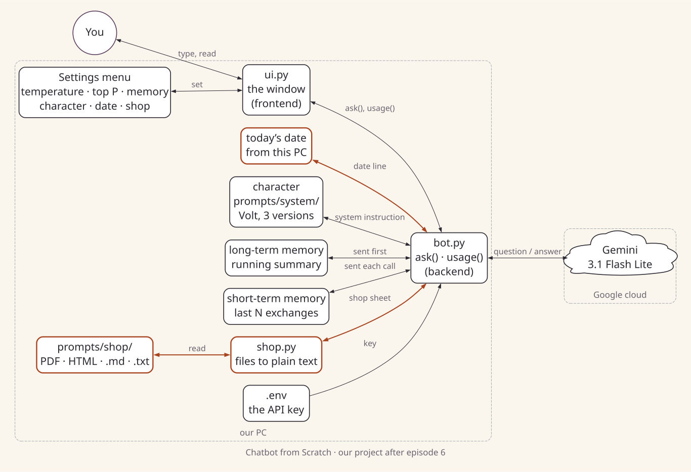
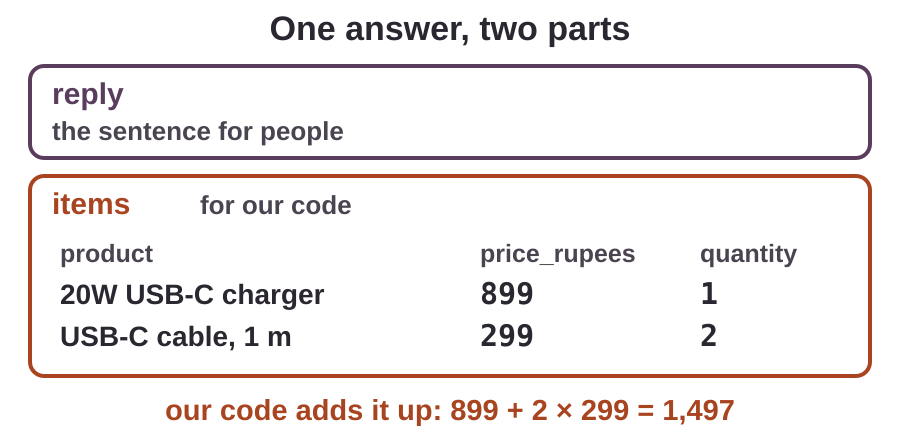
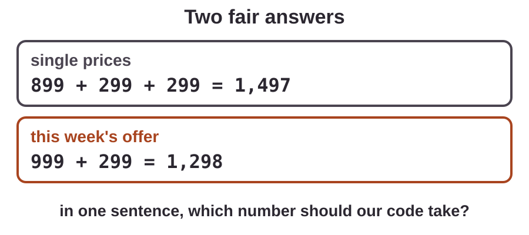
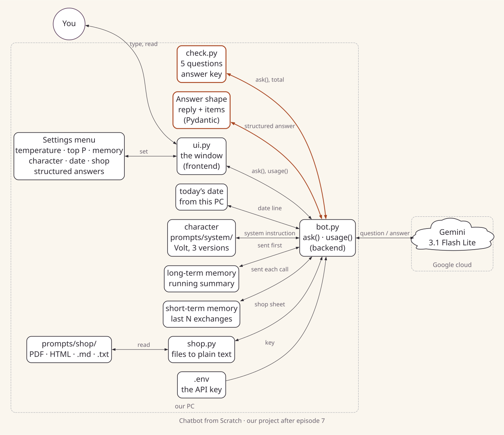
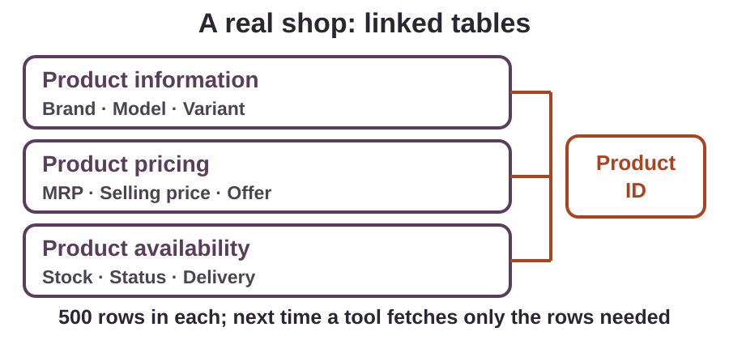

Prefer to watch? This chapter goes with Episode 7 (7:36). Open it on YouTube.
prompts/shop/ and its .venv. Antigravity, signed in: install Antigravity on Windows. And your own Gemini key in .env..env with GEMINI_API_KEY; the README shows the setup.A number inside a sentence
Chapter 6 ended with a fair question: what do a 20W charger and two 1 m cables cost together? Volt got it right, 1,298 rupees. But the number sat in the middle of a sentence written for a person.
Code cannot reliably add that up, show it as a total, or compare it with the price list. It would have to guess which number in the sentence is the one that matters.

Structured output in AI Studio
Google AI Studio shows the idea first. In Run settings, turn on Structured outputs and click Edit. In the Code Editor, describe the answer you want back:
reply: the sentence, for people;items: a list, each with aproduct, itsprice_rupeesas a whole number, and aquantity.
Giving the model a shape to fill like this has a name: structured output. Attach products.pdf and offers.html, ask the same question, and the answer comes back as JSON in exactly that shape: the 20W USB-C charger, 899, quantity 1; the 1 m USB-C cable, 299, quantity 2.
We used Gemini 3.1 Flash Lite, the same model as our bot. The first model we tried was busy, so we switched.

The structured prompt
Now bring this to our own code. Make a new file, prompts/07-structured.txt.
Task : Make Volt's answers something our code can use, not just read (structured output): the reply, plus each product with its price as a plain number Context : - Use the virtual environment .venv in this folder. Don't create a new one. - Today Volt's price sits inside a sentence, so our code cannot add it up or check it. - In bot.py, describe the answer with two small Pydantic classes. Item: product (text), price_rupees (whole number), quantity (whole number). Answer: reply (text), items (a list of Item). - Ask Gemini to answer in exactly that shape (JSON with the Answer schema), and read it back into an Answer. - items lists each product the question asks about, with its price from the shop sheet and the quantity asked. When the question has no price in the shop sheet, items is empty. - The window shows the reply as before. Under it, when items is not empty, one line our code works out itself: Total (our code): 1,298 rupees (price times quantity, added up). - Add Settings > Structured answers: a tick I can select or unselect. It starts selected. Unselected, Volt answers in plain text as before, with no total line. - The memory keeps the reply text only. - Add pydantic to requirements.txt if it is not there. - Keep the date, the shop sheet, the character, the memory, the settings and everything else as it is. - Don't write test files; I will try it myself. Folder arch : - ui.py : the window (frontend) - bot.py : the chatbot (backend), now with structured answers - shop.py : reads the shop files into plain text - prompts/ : our prompts - prompts/system/ : the system prompts - prompts/shop/ : our shop files
"Don't write test files" keeps the change small: we try it ourselves in the window next.
Review and implement prompts/07-structured.txt
When it is done, the agent has changed 3 files: bot.py, ui.py and requirements.txt. Click Accept all. We ran the agent on Gemini 3.8 Flash with Thinking effort Medium (hover the model name to choose it); a small, clear prompt needs no deeper thinking, and the wait is shorter.
What the agent wrote
Pydantic is a Python library for describing data as small classes with typed fields. The agent wrote two of them in bot.py:
class Item(BaseModel):
product: str
price_rupees: int
quantity: int
class Answer(BaseModel):
reply: str
items: list[Item]- The shape goes to Gemini:
bot.pysendsresponse_mime_type="application/json"andresponse_schema=Answerwith the call. - The answer comes back into it:
Answer.model_validate_json(...)turns the reply into anAnswer, soprice_rupeesis a real whole number, not text. - Our code does the sum: in
ui.py, price times quantity, added up, shown asTotal (our code)under the reply.
Structured answers, live
python ui.py
Maximise the window and ask What do a 20W charger and two 1 m USB-C cables cost together? Then untick Settings › Structured answers and ask again.
| Structured answers | What the window shows | Tokens in |
|---|---|---|
| On | The reply, and under it Total (our code): 1,497 rupees | 645 |
| Off | One sentence with two totals in it: 1,497 from single prices, and 1,298 with this week's offer; no total line | 674 |
Two fair answers
Both totals are right:
- Single prices: 899 + 299 + 299 = 1,497.
- This week's offer: the charger with one cable for 999, plus a second cable at 299 = 1,298.
In one sentence, code cannot know which number to take. With structured output it gets the items, and adds them up itself.

The regression test prompt
Now that prices are plain numbers, code can check them. Make another file, prompts/07-check.txt: five fixed questions about different products, each with the total we expect, written down like an answer key.
Task : Write check.py, a five-question check: it asks Volt fixed questions and compares each total with the answer we wrote down Context : - Use the virtual environment .venv in this folder. Don't create a new one. - I run it in the terminal with: python check.py - At the top of check.py, a list of 5 checks, each a question and the total we expect in rupees. These are our answers, written down: - How much is the 20W charger? 899 - How much is the charger with a cable this week? 999 - How much are two 2 m USB-C cables? 898 - How much are wireless earbuds and a phone stand together? 2848 - How much is a smart watch? 0 (we don't sell it, so no items) - For each check, start a new chat and ask through bot.py with structured answers, today's date and the shop files on. - Our code works out Volt's total from the items: price times quantity, added up. - Print one line per check: its number, the question, Volt's total, the expected total, and PASS or FAIL, in columns. - Last line: 5 of 5 passed (or how many passed). - Don't change ui.py. Change bot.py only if check.py needs it to ask without the window. - Don't write test files; I will try it myself. Folder arch : - ui.py : the window (frontend) - bot.py : the chatbot (backend) - shop.py : reads the shop files into plain text - check.py : the five-question check - prompts/ : our prompts - prompts/shop/ : our shop files
Review and implement prompts/07-check.txt
The agent may ask to try the five questions itself. We said no: we run it ourselves. It writes one new file, check.py.
The regression test, live
Asking the same fixed questions after every change, to catch what broke, has a name: a regression test.
python check.py
| Run | What happened | Result |
|---|---|---|
| First | Every total matches the answer key: 899, 999, 898, 2848, 0 | 5 of 5 passed |
| Second | In prompts/shop/offers.html the charger with a cable goes from 999 to 949, saved. Line 2: Volt says 949, the key says 999 | FAIL, 4 of 5 passed |
| Third | The shop is right, so the key in check.py becomes 949 | 5 of 5 passed |
A failing line does not say who is wrong; it says something changed. You decide which is right, the shop or your answer key, and fix that one.
check.py itself is short: the answer key at the top, a list of questions and totals; then, for each question, a new chat, Volt's items added up, and the total compared with the key.
Our project so far
Two parts are new in this chapter, in orange below:
- The Answer shape (Pydantic) in
bot.py: a reply plus items, each price a whole number. check.py, our regression test: five questions against an answer key.

Quick reference
Every command and menu from this chapter. The prompts are above.
| Command or menu | What it does | Use it when |
|---|---|---|
Review and implement prompts/07-structured.txt | Adds the Answer shape and the total line | After writing the first prompt |
Review and implement prompts/07-check.txt | Writes check.py | After the second prompt |
python ui.py | Opens the window | To see the total line |
| Settings › Structured answers | Asks for the shape, or plain text | To compare the two |
python check.py | Runs the regression test | After every change to the shop or the code |
The takeaway
- Structured output: give the model a shape and it fills it, so prices arrive as numbers your code can use.
- Pydantic describes that shape in Python, hands it to Gemini, and reads the answer back into it.
- A regression test asks the same questions after every change; a failure tells you something changed, and you decide what is right.
Your own check
The goal: watch your own regression test catch a change.
The steps: run both prompts through the agent in your own copy of the project. Add one question of your own to the CHECKS list at the top of check.py, with the total you expect, and run python check.py. Then change one price in prompts/shop/ and run it again.
Guess first: which line will fail?
One question for you: what would you check first in your own bot?
Next: a real shop's data
Our shop gets another price list: 500 mobile phones, in three tables (product information, pricing, availability) linked by a Product ID.
| Shop sheet | One question sends | |
|---|---|---|
| 4 shop files | 329 tokens | 645 tokens in |
| + 500 phones | 42,285 tokens | 42,601 tokens in |
The answer is still right (the Galaxy S25 with 12 GB and 256 GB, 69,999 rupees), but every question pays for all 500 phones. Chapter 8: the phones go into an Excel sheet, and Volt uses a tool to fetch only the rows a question needs.

References
Where each number on this page comes from. Everything was also checked in our own recording on 24 Nov 2026.
- Google · Structured output Asking Gemini for JSON in a given schema, including a Pydantic class as the schema. https://ai.google.dev/gemini-api/docs/structured-output
- Pydantic · Models Classes with typed fields, and model_validate_json to read JSON into one. https://docs.pydantic.dev/latest/concepts/models/
- Google · Google AI Studio The Structured outputs switch and its Code Editor. https://aistudio.google.com
- Learn AI by Building · chatbot-from-scratch on GitHub This chapter's finished code and prompts. https://github.com/Aditya-402/chatbot-from-scratch
- My own recording · 24 Nov 2026, Windows 11 Every answer, total and token count on this page is from those takes, on Gemini 3.1 Flash Lite.
New chapters and episodes come out every week. Follow along on YouTube or the WhatsApp channel. Questions? Ask under the video on YouTube; I read every comment.